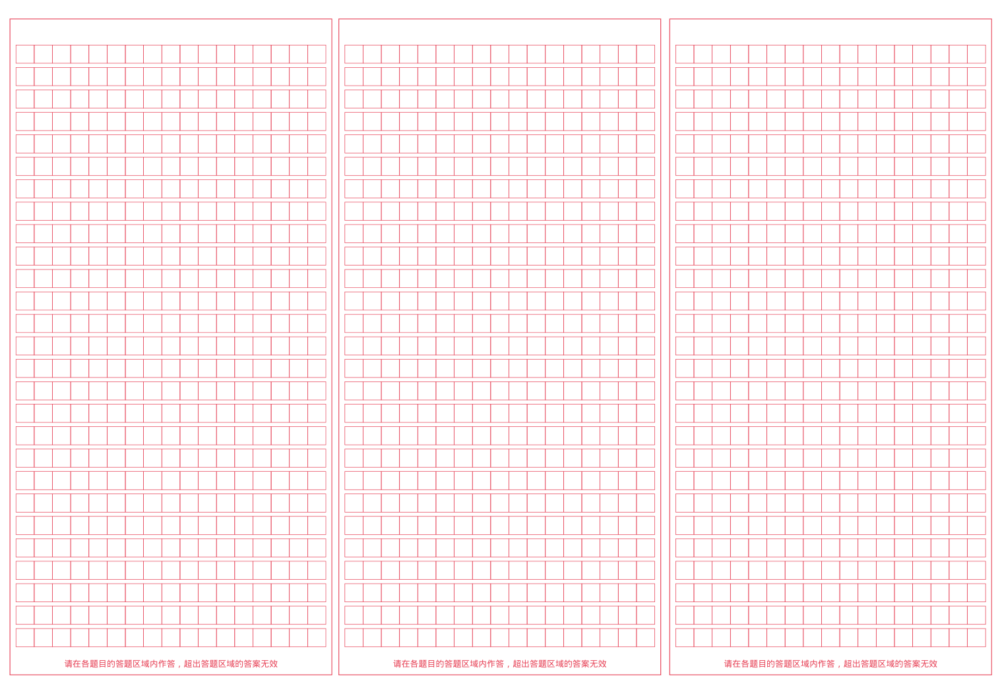

01 / WRITE
作文内容
每个非空行作为一个自然段，超长段落自动换行
02 / TYPOGRAPHY
描摹设置
数值越高，字迹越浅
正在加载网页内置楷体，完成后电脑与手机将使用同一字形。
03 / FEEDBACK
范文点评 可选
点评文字独立排版，始终使用黑色；不影响正文的字号与灰度。
04 / FILES
项目与导出
作文、字体与 PDF 都在当前设备的浏览器中处理。GitHub 只托管网页和空白模板，不接收你的作文内容。
LIVE PREVIEW
实时答题卡预览

默认使用随网页内置的中文楷体；文字以透明层实时叠加，答题卡格线始终单独显示。PDF 以高分辨率文字图层导出并保留原始矢量格线。